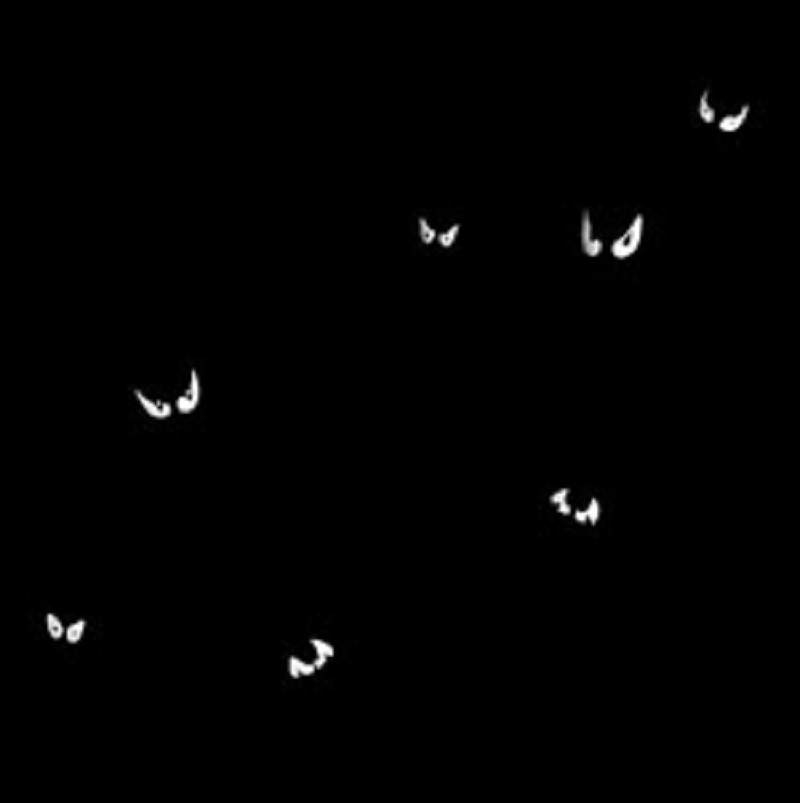

"I would like to take this time to study my charts since we will be going where few ships have sailed before," you reply.
"Suit yourself...." The Captain then orders the small boat lowered over the side so that the men can gather provisions from the island. As you study your charts, you think you hear a strange noise coming from under your floor. You are used to ocean noises and boards creaking, but this seems different. You decide to go down to the hold to make sure there are no leaks. As you descend, you light your lantern to help you penetrate the darkness. Suddenly, you hear the same sound, only louder. As you turn around, all you can see are hundreds of beady eyes looking at you. Now you wish you didn't have your light, because they can see you, and they are hungry!
